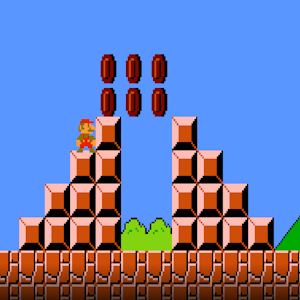
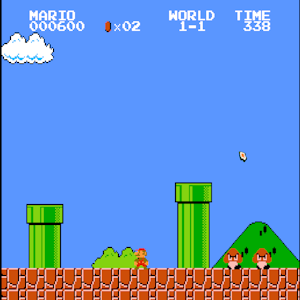

Mario Rom Hack
Измененая версия Super Mario Bros в которой были изменены некоторые значения, немножко первый уровень и почему-то оно стало весить 256 кб.
Играть

Mario Original
Super Mario bros это классическая игра платформер в котором вы играете за Марио, где ваша цель спасти принцессу Пич.
Играть
NESOS
NESOS — это операционная система, разработанная для игровых систем Nintendo Entertainment и Family Computer. Она включает в себя два основных приложения: текстовый процессор и настройки. Текстовый процессор позволяет пользователям выводить символы и определённые блоки на экран, а затем сохранять эти данные в виде файла для последующего использования или редактирования.
Играть